エルデンリング ナイトレイン
深き夜 深度 5・9,999 点 · Mod 制作
職業：ゲームプランナー · システム / 数値 / レベル
復旦大学 修士課程在学中。『ナイトレイン』の大型 Mod と Douyin 向けミニゲーム『宇宙バーガー』を個人で制作し、game jam ではメインプランナーを担当。『NARUTO』モバイルと『バトルグラウンド』のシステム分析を書きました。まずスクリプトでシミュレーションし、データを見て調整するのが習慣です。
CHARACTER
職業 · ゲームプランナー
タイプ · システム / 数値 / レベル
復旦大学 修士課程在学中、GIS とリモートセンシングのデータ分析経験 3 年。ゲーム作りでは、まずスクリプトでシミュレーションし、データを見て調整します。
スキルにカーソルを合わせると、使った場面が表示されます。
4 つのプラットフォームで記録のある 35 本、合計 4,600 時間以上。最も長く遊んだのは 2 本の長期運営モバイルゲームで、NARUTO とハースストーンがそれぞれ 1,000 時間。2 本のシステム分析はここから生まれました。家庭用ではソウルライクのアクションが中心で、PS5 で遊んだ 11 本のうち 10 本がプラチナです。
V12 アカウント。システム分析の研究対象でもあります。
1000h+バトルグラウンド 6,120 点。システム分析の研究対象でもあります。
1000h+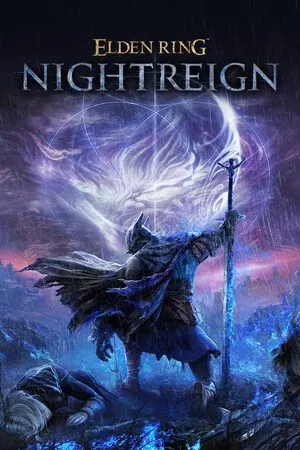
プラチナ、深き夜 9,999 点。この作品の大型 Mod を制作。
600h+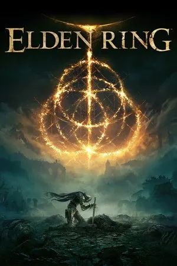
プラチナ。ソウルライクにのめり込んだきっかけで、Mod 制作の原点です。
200h+YS·16SAVE STATION
◀ ▶ 切り替えA ランダムB 取り出す
深き夜 深度 5・9,999 点 · Mod 制作
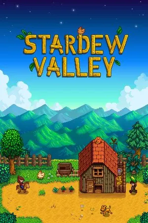
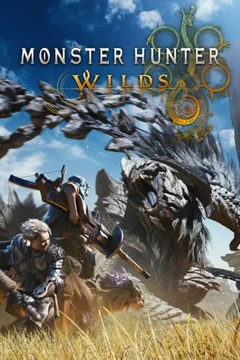
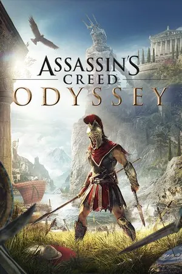
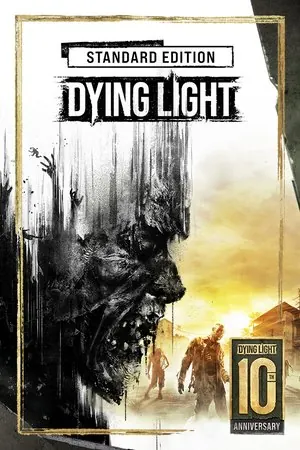
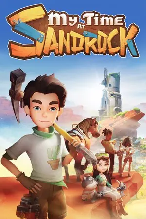
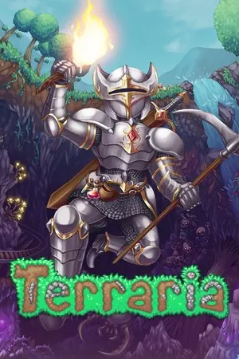
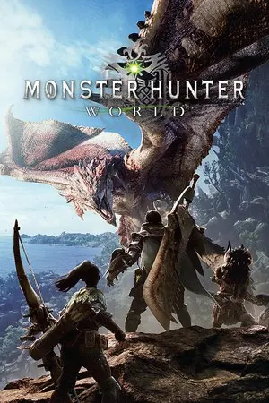
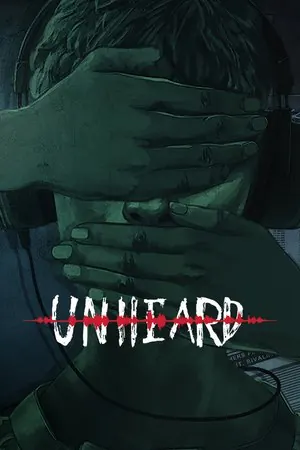
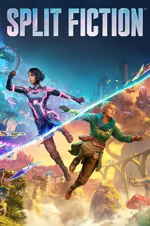
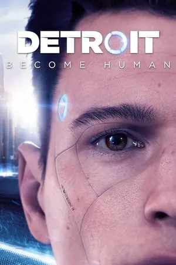
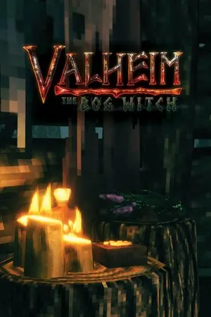
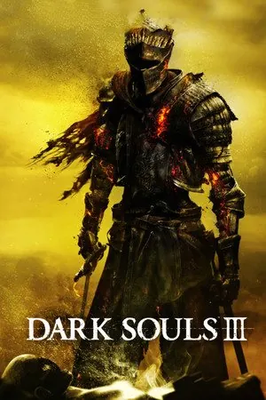
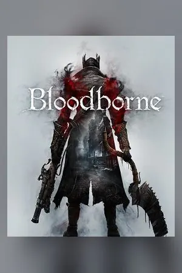
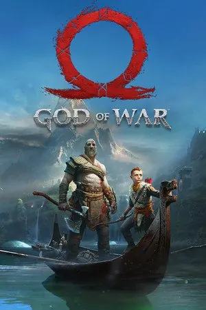
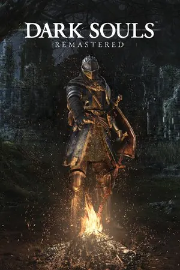
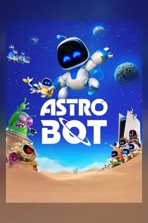
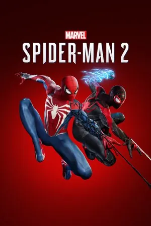
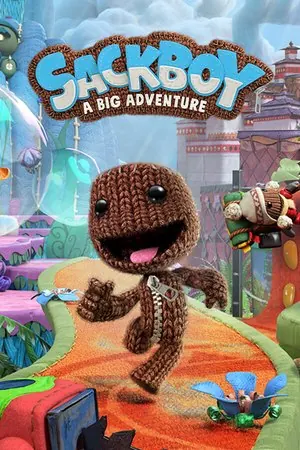
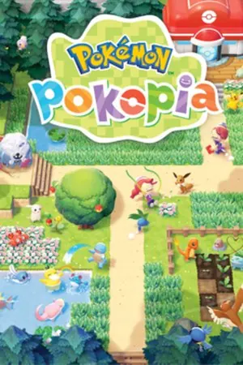
V12 · 36 ページの分析
バトルグラウンド · 20 ページの分析
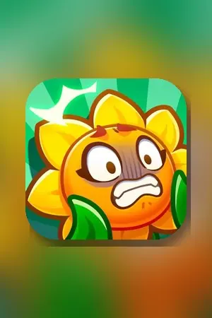
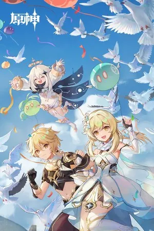
いちばん多く観ているのは日本のアニメと特撮で、仮面ライダーは平成から令和まで全作品を視聴。映画・ドラマは SF とミステリーが中心で、ノーラン作品はひと通り観ました。岩井俊二のような静かな日本映画も好きです。
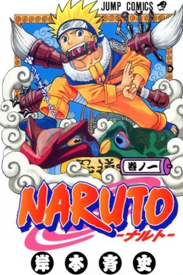
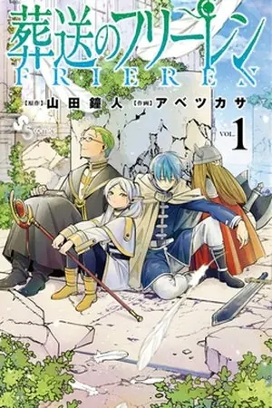
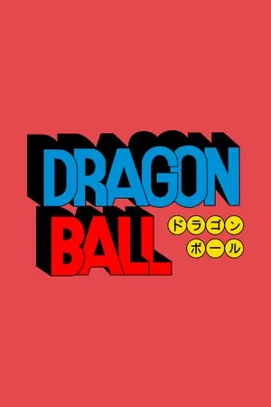
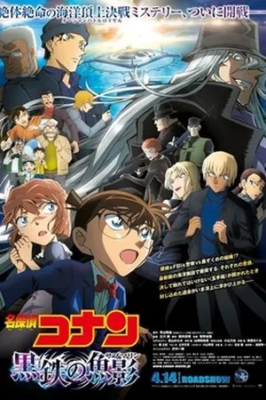
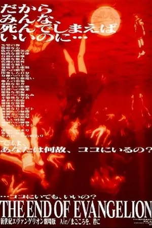
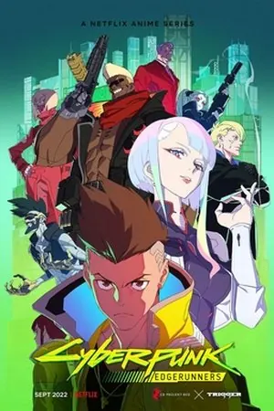
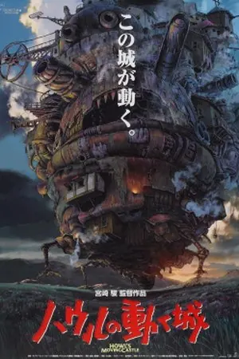
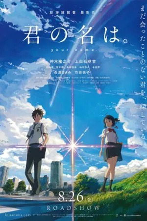
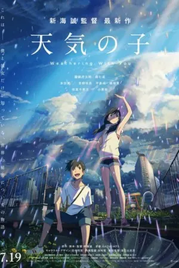
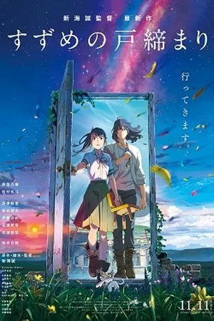
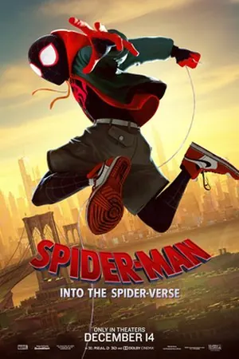
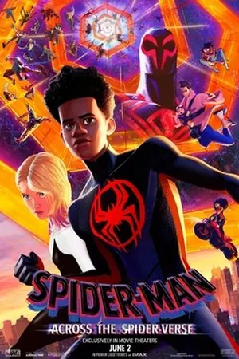
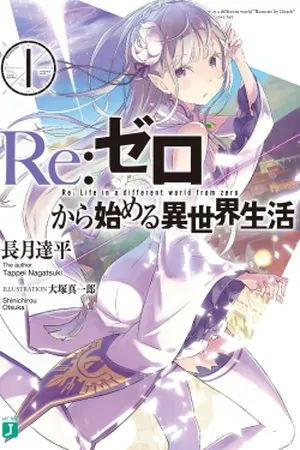
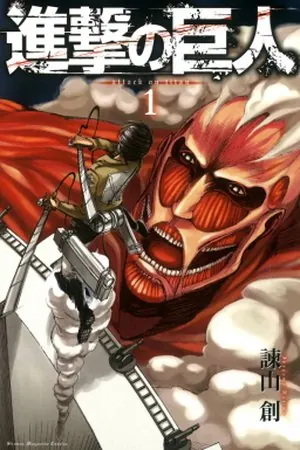
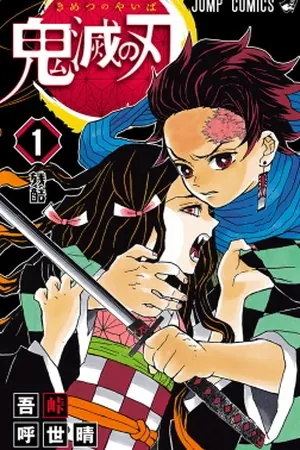
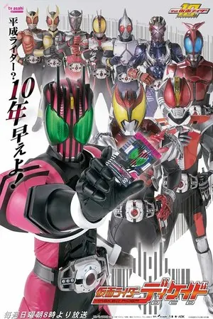
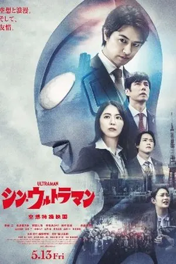
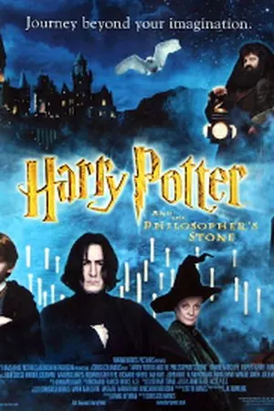
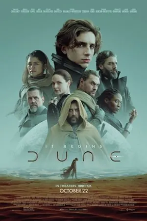
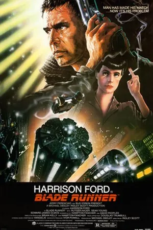
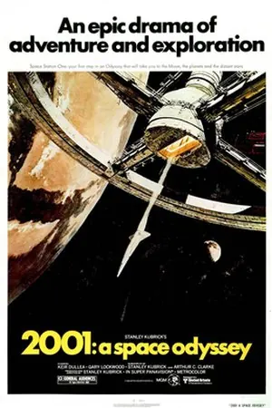
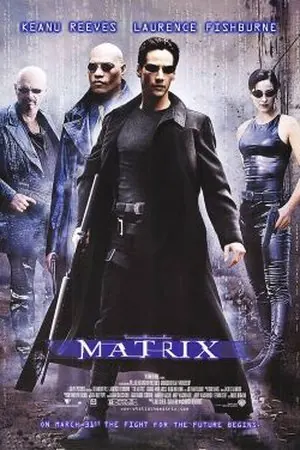
……ほかにもたくさんあります。
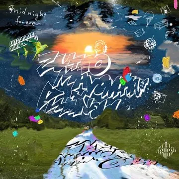
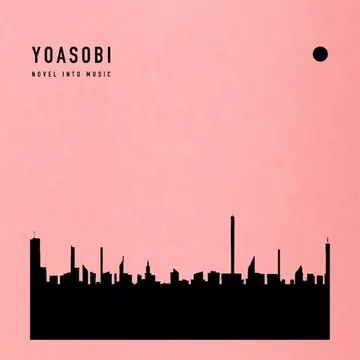
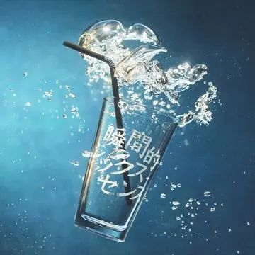
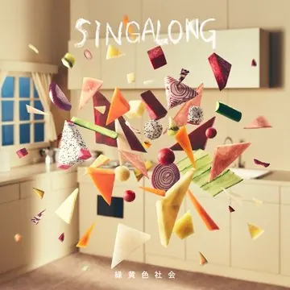
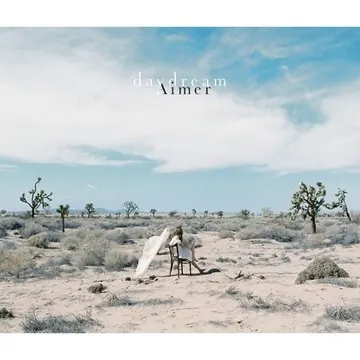